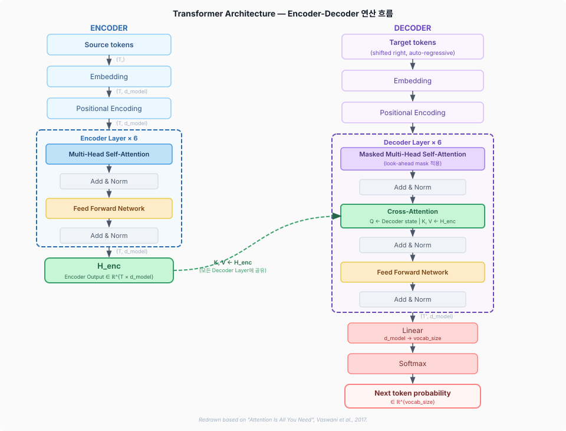
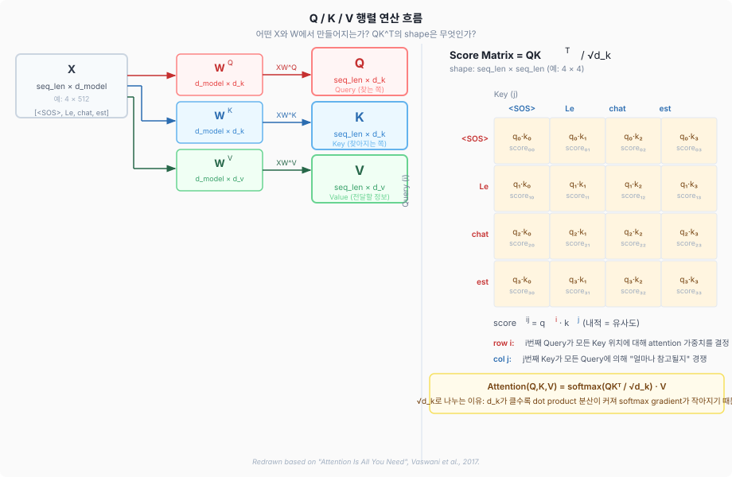
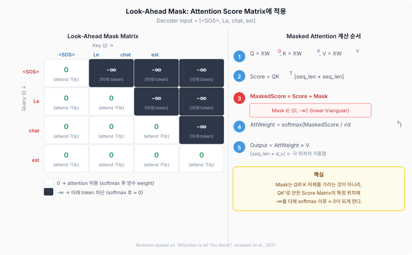
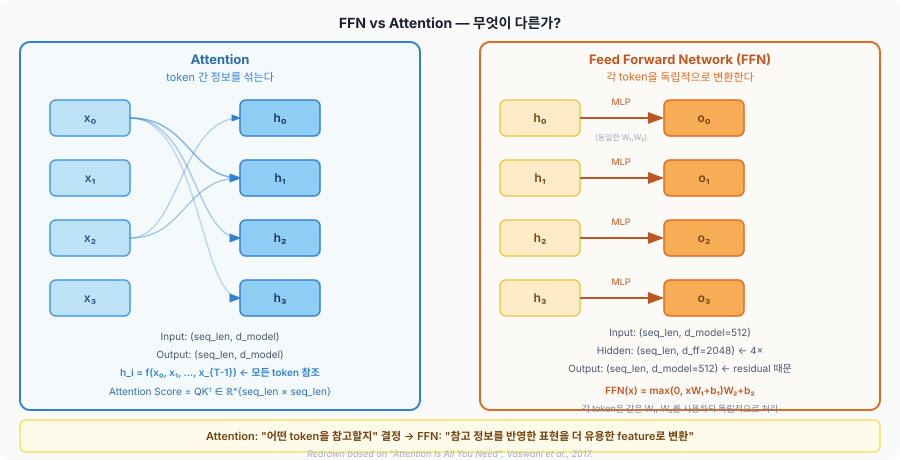
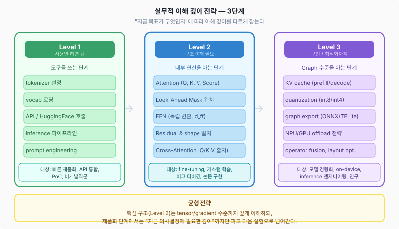

개념 암기가 아니라 Tensor Flow, Shape, Mask, Gradient로 납득하기
"Attention은 관계를 본다"는 설명은 틀리지 않지만, 그것만으로는 부족하다. 이 자료는 왜 Q/K/V가 그런 역할로 학습되는지, Mask가 정확히 어디에 적용되는지, FFN이 Attention과 어떻게 다른지, Residual이 왜 shape 일치를 강제하는지를 실제 tensor shape과 연산 순서로 납득하는 방식을 설명한다.
→ 개념적으로 틀리지 않지만, 실제로 "그게 성립하는지" 연산 그래프에서 확인할 수 없다.
QKᵀ의 shape은 어떻게 되는가? row와 column은 무엇을 의미하는가?Transformer를 "멋진 아이디어 모음"이 아니라, 입력 tensor가 여러 weight matrix, mask, softmax, residual connection을 지나며 변환되는 연산 그래프로 본다.

Redrawn based on "Attention Is All You Need", Vaswani et al., 2017.
"Query가 찾는 쪽이고 Key가 찾아지는 쪽"이라는 말이 왜 성립하는지는 실제 행렬 shape과 score matrix 구조를 보면 자연스럽게 이해된다.

Redrawn based on "Attention Is All You Need", Vaswani et al., 2017.
Q가 Score Matrix의 row를 만들기 때문이다. i번째 row는 i번째 위치가 어떤 token들을 얼마나 참고할지 결정한다. 즉 "내가 무엇을 찾고 있는가"에 해당하는 표현이 row 방향으로 작용한다.
K가 Score Matrix의 column 방향에서 여러 Query와 비교되기 때문이다. j번째 Key는 여러 Query에게 "내가 지금 참고할 만한 token인가?"라는 방식으로 평가된다.

Redrawn based on "Attention Is All You Need", Vaswani et al., 2017.
아래 표는 인터랙티브 버전이다. 어두운 셀(−∞)에 마우스를 올리면 설명이 표시된다.
| <SOS> | Le | chat | est | |
|---|---|---|---|---|
| <SOS> | 0 attend 가능 | −∞ 차단됨 | −∞ 차단됨 | −∞ 차단됨 |
| Le | 0 attend 가능 | 0 attend 가능 | −∞ 차단됨 | −∞ 차단됨 |
| chat | 0 attend 가능 | 0 attend 가능 | 0 attend 가능 | −∞ 차단됨 |
| est | 0 attend 가능 | 0 attend 가능 | 0 attend 가능 | 0 attend 가능 |
Encoder self-attention에는 look-ahead mask가 없다. Source sequence에서는 모든 위치끼리 자유롭게 참조 가능하다. 대신 padding 위치(실제 token이 없는 위치)를 막는 padding mask만 사용한다.
Decoder masked self-attention에는 look-ahead mask를 사용한다. 학습 시 전체 target sequence를 한번에 입력하지만, 각 위치는 자신 이전의 token만 볼 수 있다. Cross-Attention에서는 K/V가 Encoder 전체에서 오므로 별도 look-ahead mask가 없다.

Redrawn based on "Attention Is All You Need", Vaswani et al., 2017.
"어떤 token을 참고할지"를 결정한다. Score Matrix = QKᵀ 이 token 간 관계를 계산하므로, h₀ = f(x₀, x₁, ..., x_{T−1}) 형태로 모든 token의 정보를 혼합한다.
"각 token representation을 어떻게 더 유용한 feature로 변환할지"를 학습한다. token 간 정보를 새로 섞지 않는다. 각 token position에 동일한 MLP를 독립적으로 적용한다.
Output = LayerNorm(x + Sublayer(x))tensor shape을 항상 추적하기 때문에 런타임 에러 원인을 빠르게 찾는다.
Mask shape과 Score Matrix shape의 broadcasting 규칙을 이해하고 있어서 shape 불일치나 잘못된 차원 적용을 감지할 수 있다.
수식의 각 항이 어떤 tensor 연산인지 직접 매핑할 수 있다.
graph export 시 어떤 op이 변환되는지, 어디서 shape 변환이 발생하는지 이해한다.
inference 최적화 주제들이 결국 tensor shape, cache 전략, 연산 재사용에서 나온다는 것을 안다.
"Attention이 관계를 본다"는 말이 Score Matrix의 shape과 연산 방식으로 성립하는지 직접 확인할 수 있다.
모든 개념을 깊게 파다 보면 간단한 실험 하나도 이론 확인 이후로 미뤄질 수 있다.
downstream task를 fine-tuning하는 단계에서 quantization 원리까지 파는 것은 과잉 투자다.
"QKᵀ의 row가..."로 설명하면 개념 설명을 원하는 팀원과 소통이 안 될 수 있다.
사용자가 원하는 결과가 나오는지보다 내부 동작이 정확한지에 더 관심이 집중될 수 있다.
torch.nn.MultiheadAttention이 올바르게 구현되어 있는지 소스까지 확인하다 시간을 쓸 수 있다.
이 자료 전체를 관통하는 이해 방식(tensor shape, mask 위치, gradient 흐름)은 필요하지만, 모든 상황에서 같은 깊이로 파고드는 것은 비효율적이다.
